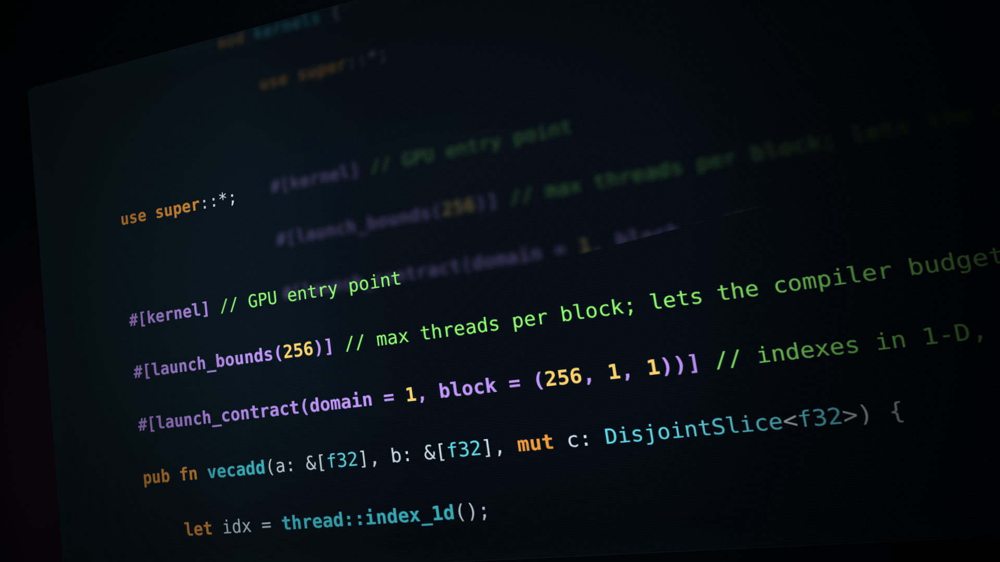

2026年9月，NVIDIA宣布正式投入原生Rust GPU编程。CUDA C++ 与CUDA Python是成熟的、企业级工具链，而CUDA Rust会在2027年及之后持续成长。
AI的系统层横跨推理引擎、服务基础设施、驱动和智能体运行时，并且随着模型与技术的更迭不断变化。其中越来越多的部分用Rust编写，它在不牺牲性能的前提下，把整类bug拦在编译期。
NVIDIA出于同样的理由参与这场迁移：Nova Linux驱动用Rust写，NVIDIA Dynamo构建在Rust内核之上，NVTX也提供了Rust绑定。
GPU内核是那个例外。你可以从Rust启动内核，但内核本身往往得用另一种语言来写。
NVIDIA CUDA Rust补上了这个缺口：GPU内核可以直接用Rust写、原生编译成PTX，而不是对别处代码的一层包装。
用Rust有两条路线，对应CUDA自身已有的两条路线。SIMT是你在CUDA C++ 或numba-cuda里已经熟悉的模型：你描述一个线程做什么，然后启动成千上万个线程。Tile是更新的编程模型，C++ 和Python里也已提供。这些前端都让你描述一个数据tile要做什么，剩下的交给Tile IR编译器。
真要选一个动手，先选Tile。编译器决定tile如何映射到每种架构，源码里不必写死架构相关的选择；需要那层控制、想自己管理内存和线程时，再下探到SIMT。
选哪种语言和选哪种模型是两件事。用最贴合你现有技术栈的那套CUDA接口即可，下面两个项目面向技术栈是Rust的场景。NVIDIA计划支持跨语言互操作，所以这个选择不会把你锁死在其他生态之外。
下面是同一条内核在两条路线上的实现，都对1024个浮点数做逐元素相加。两个都是完整程序，都能跑，也都会打印同一行结果，可以并排对照看差异。

cuda-oxide是一个自定义的rustc codegen后端。它拦截编译过程，把#[kernel] 函数经由Rust MIR、社区的Pliron IR框架、LLVM IR一路降到PTX，其余一切都交回标准后端。构建在Pliron之上的GPU dialect由NVIDIA自己实现，在标准LLVM后端接手之前，dialect和每一次变换都留在Rust里。
环境要求是Linux、算力8.0及以上的GPU、CUDA工具包（12.x或更新）、带libclang头文件的clang，以及固定版本的nightly工具链。cargo oxide doctor会逐项检查，包括可选的系统LLVM。先安装驱动构建的Cargo子命令cargo-oxide：
cargo +nightly-2026-04-03 install --git https://github.com/NVlabs/cuda-oxide.git cargo-oxide然后新建项目并运行。模板就是一个完整的向量加法程序：
cargo oxide new vecadd_demo
cd vecadd_demo
cargo oxide doctor
cargo oxide run第一次cargo oxide run会构建codegen后端，所以会花上一段时间，之后的运行复用缓存。
它会打印PASSED: all 1024 elements correct。下面是完成这件事的完整程序，与cargo oxide new写出的内容一致，只是加了注释：
use cuda_device::{kernel, launch_bounds, launch_contract, thread, DisjointSlice};
use cuda_host::cuda_module;
use cuda_core::{CudaContext, DeviceBuffer, LaunchConfig1D};
// === DEVICE CODE - everything in here is compiled to PTX ===
// The macro also generates the host-side API used further down:
// `load`, `prepare_vecadd`, and the safe `vecadd` launch method.
#[cuda_module]
mod kernels {
use super::*;
#[kernel] // GPU entry point
#[launch_bounds(256)] // max threads per block; lets the compiler budget registers
#[launch_contract(domain = 1, block = (256, 1, 1))] // indexes in 1-D, 256-thread blocks
pub fn vecadd(a: &[f32], b: &[f32], mut c: DisjointSlice<f32>) {
let idx = thread::index_1d();
let idx_raw = idx.get(); // the plain usize, for reading the inputs
if let Some(c_elem) = c.get_mut(idx) {
*c_elem = a[idx_raw] + b[idx_raw];
}
}
}
fn main() -> Result<(), Box<dyn std::error::Error>> {
// === HOST SETUP - device, stream, and buffers ===
let ctx = CudaContext::new(0)?;
let stream = ctx.default_stream();
const N: usize = 1024;
let a_host: Vec<f32> = (0..N).map(|i| i as f32).collect();
let b_host: Vec<f32> = (0..N).map(|i| (i * 2) as f32).collect();
let a_dev = DeviceBuffer::from_host(&stream, &a_host)?;
let b_dev = DeviceBuffer::from_host(&stream, &b_host)?;
let mut c_dev = DeviceBuffer::<f32>::zeroed(&stream, N)?;
// === LOAD, PREPARE, LAUNCH ===
// SAFETY: this package owns the embedded device bundle produced for the
// kernels module above.
let module = unsafe { kernels::load(&ctx)? };
// 4 blocks of 256 threads, 0 bytes of dynamic shared memory. `prepare_vecadd`
// checks that against the contract above and against the live device limits.
// The safe `vecadd` below takes that token where a raw config would go.
let prepared = module.prepare_vecadd(LaunchConfig1D::new((N as u32).div_ceil(256), 256, 0))?;
module.vecadd(&stream, &prepared, &a_dev, &b_dev, &mut c_dev)?;
// === READ BACK AND VERIFY ===
// Copies down and synchronizes, so the launch has finished by the time
// `c_host` can be read.
let c_host = c_dev.to_host_vec(&stream)?;
let errors = (0..N)
.filter(|&i| (c_host[i] - (a_host[i] + b_host[i])).abs() > 1e-5)
.count();
if errors == 0 {
println!("PASSED: all {} elements correct", N);
} else {
eprintln!("FAILED: {} errors", errors);
std::process::exit(1);
}
Ok(())
}主机端和设备端代码在同一个文件里，一条命令构建，不需要单独的内核crate。
先看内核签名，整个安全论证都在这里。a和b是普通的共享切片，每个线程都能读。c是DisjointSlice，这个类型把每个元素的所有权独占交给对应线程，不交别的。之所以需要它，是因为&mut [f32] 在这里形状不对：所有线程都需要同一个&mut，而Rust正确地拒绝了这种做法。DisjointSlice把这一次可变借用拆成按线程切分的若干份。
thread::index_1d() 返回的是一个索引类型，不是裸整数，c.get_mut(idx) 也只接受这个类型。拿回来的是Option，所以越界是一种你要显式处理的分支，而不是事后才发现的内存错误。
启动是经过校验的，不是被信任的。#[launch_contract] 声明这条内核按一维索引、块大小256线程。prepare_vecadd拿你的LaunchConfig1D去对照这份声明和设备的实时限制，校验通过后返回一个凭据，安全的vecadd方法需要这个凭据。没有合约的内核只暴露原始的unsafe启动方法，因为裸的LaunchConfig并不能说明自己在启动什么内核。
cutile-rs站得更高一层：你在tile上做计算，而不是在标量上。每个tile block把内核体当作一个逻辑线程，在一次子张量的数据上跑一遍，具体用多少真实GPU线程由编译器决定。#[cutile::module] 宏把内核的AST嵌进主机端二进制，在内核第一次真正需要时，通过CUDA Tile IR（NVIDIA的tile级编译器IR）做JIT。
环境要求比SIMT路线轻：算力8.0及以上的GPU、CUDA 13.3、stable Rust 1.89或更新，以及Linux，不需要nightly工具链，也不需要自备LLVM。
cutile已经发布，不用克隆仓库：
cargo new vecadd_demo
cd vecadd_demo
cargo add cutile下面是同一段逐元素加法，改用tile的写法。把它贴进src/main.rs，然后cargo run：
use cutile::prelude::*;
// The macro captures this module's AST into the host binary. The kernel is
// JIT-compiled through CUDA Tile IR the first time it is actually launched.
#[cutile::module]
mod kernel {
use cutile::core::*;
#[cutile::entry()]
fn add<const B: i32>(
// B is the tile width, a static dimension. A different B produces a
// different specialization.
z: &mut Tensor<f32, { [B] }>, // exclusive output, one sub-tensor of B elements
x: &Tensor<f32, { [-1] }>, // shared input; -1 is a dynamic dimension, resolved at launch
y: &Tensor<f32, { [-1] }>,
) {
// This body runs once per mut sub-tensor, as a single logical thread.
// Tile kernels load tiles, not scalars, from x and y.
let tx = load_tile_like(x, z); // the slice of x lining up with this sub-tensor of z
let ty = load_tile_like(y, z);
z.store(tx + ty); // elementwise across the whole tile
}
}
fn main() -> Result<(), Error> {
let device = Device::new(0)?;
let stream = device.new_stream()?;
// These are lazy. Nothing has touched the GPU yet.
let x = api::ones::<f32>(&[1024]);
let y = api::ones::<f32>(&[1024]);
// Partitioning does three things at once: gives each tile exclusive
// ownership of its own 128-element chunk, fixes the grid at 1024/128 = 8
// tiles, and supplies B.
let z = api::zeros::<f32>(&[1024]).partition([128]);
let c: Vec<f32> = kernel::add(z, x, y) // takes ownership of all three tensors
.first() // ...and returns them; pick the output back out
.unpartition() // drop the host-side partition wrapper; no data moves
.to_host_vec() // record the copy back
.sync_on(&stream)?; // and only now does any of it run
let errors = c.iter().filter(|&&v| (v - 2.0).abs() > 1e-5).count();
if errors == 0 {
println!("PASSED: all {} elements correct", c.len());
} else {
eprintln!("FAILED: {errors} errors");
}
Ok(())
}输出是PASSED: all 1024 elements correct。Tile路线用stable Rust得到同样的答案，它的签名给出同样的安全论证。这次没有DisjointSlice：主机端的分区只对可变张量才需要，它把一块可写的子张量交给一个tile block，别的block无法与之重叠。这种独占性正是&mut本来就保证的。
输入形状里的-1是哨兵值，不是尺寸。这个维度在启动时从张量上读出来，所以形状可以变化而不用重新编译。
主机端有意思的一行是.partition([128])，它同时做三件事。第一，让独占性落到实处：每个tile拥有自己那128个元素的块，别的tile碰不到。第二，定死启动几何：1024除以128就是8个tile的网格。
网格由分区推导出来，而不是另算一遍再拿去和内核的索引方式对账。它还顺带提供了B，调用点从来不写这个值，因为启动器会从分区上读tile宽度。这也是为什么&mut输出必须先分区才能传进去。
再看启动返回什么。你在主机端调用的add是宏生成的启动器，不是上面那个设备函数。它拿走三个张量的所有权，在GPU完成后把它们作为元组还给你，.first() 就是从里面把输出挑出来。
在.sync_on(&stream) 之前什么都不会运行。它之前的一切都是惰性的描述，只记录、不提交，包括ones、zeros、内核调用，甚至拷回主机。整个程序是一条链，只有一个同步点。
两条路线的内核在内存上作出同样的声明：输入是共享的，输出只属于唯一的写入者。区别只在于它们在哪一层作出这个声明，以及是否需要为此专门造一个类型。
这件事要紧，是因为成千上万个线程以不保证的顺序访问同一批缓冲区。当两个线程命中同一地址、其中一个在写时，顺序决定结果。这类bug很少能按需复现，它们往往先通过测试，然后在生产环境里炸掉。
把SIMT内核的输出缓冲区当作它自己的输入传进去，编译不过，不管这条内核实际上会不会真的竞争：
module.vecadd(&stream, &prepared, &c_dev, &b_dev, &mut c_dev)?;error[E0502]: cannot borrow `c_dev` as mutable because it is also borrowed as immutable
Tile这边的同一处别名问题同样编译不过：
let z = api::zeros::<f32>(&[1024]);
kernel::add(z.partition([128]), z, y)error[E0382]: use of moved value: `z`
两个例子都在编译期抓住了经典的别名错误，但划线的地方不同。cuda-oxide检查每一次启动调用；cutile-rs的所有权跟着张量跨过启动边界，这是两者中更强的声明。
Tile没有共享内存和线程索引可以写错，因为两者都归编译器管。一个tile block就是一个逻辑线程，没有线程可竞争，这就是它构造上安全的来源，也是你交换出去的东西。SIMT保留了那层控制，而今天那里的共享内存还需要unsafe。共享内存是高性能SIMT内核的地基，把这条路径变安全是正在进行的工作。
两个项目都处于早期，都还没到生产可用。cuda-oxide是早期alpha；cutile-rs走得更远，已发布在crates.io，并在NVIDIA之外被HuggingFace的Grout推理引擎和mistral.rs使用。覆盖面还不完整，API也会变动，遇到粗糙的地方欢迎反馈。
Cargo和crates让上手简单成为默认预期，而GPU编程历来相反，缩短这段距离本身就是工作的一部分。SIMT路线仍然需要固定版本的nightly工具链，这正是NVIDIA希望不再向开发者索取的东西。
GPU上的Rust并不新鲜。这个领域有早于NVIDIA、并且仍在并行推进的工作，cuda-oxide手册里的生态附录梳理了自身相对Rust-GPU、rust-cuda、CubeCL等项目的位置，NVIDIA也在与rust-cuda维护者合作，让两个项目一起成熟。
新鲜的是NVIDIA投入其后的工程力量，以及对方向走向的清晰判断。
● 跑SIMT示例：在cuda-oxide里执行cargo oxide new，然后cargo oxide run。
● 跑Tile示例：克隆cutile-rs，然后执行cargo run -p cutile-examples --example hello_world。
● 读文档：cuda-oxide手册与cuTile Rust文档。
● 读论文：Fearless Concurrency on the GPU。
● 提issue：哪里坏了、缺了什么，cuda-oxide或cutile-rs都可以。
● 加入讨论：两个仓库的GitHub Discussions，或cuda-oxide的Discord。
● 来听演讲：Melih Elibol将在RustConf 2026（9月8日至11日，蒙特利尔）讲Fearless Concurrency on the GPU，NVIDIA还有其他同事到场。
拿现有的东西动手试试，然后一起做。它还早，它是开放的，你现在写的东西会塑造接下来发生的事。
NVIDIA乐于和Rust社区一起推进原生Rust GPU编程。rust-cuda、rust-gpu和cudarc等项目开创了GPU与Rust的结合，包括VectorWare团队在内的这些项目维护者，在NVIDIA构建自身工作时持续影响着它对这件事的思考。
unsafe。要动手就从Tile起步，需要精调再下探。参考：https://developer.nvidia.com/blog/introducing-cuda-rust-two-tracks-for-writing-gpu-kernels/